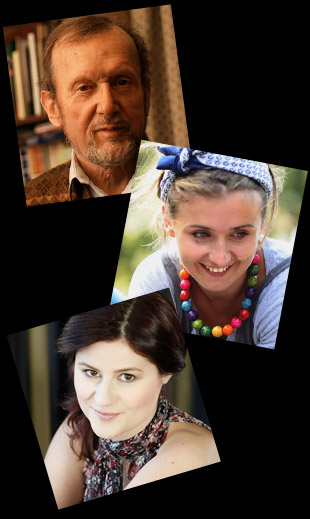
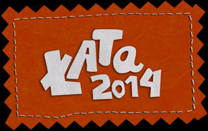

Program ramowy ŁATY 2014
prezentacje spektakli (od godz. 10.00)
W Przeglądzie mogą wziąć udział teatry dziecięce i młodzieżowe (żywego planu, lalkowe, kabaretowe, poezji i obrzędowe). Czas trwania widowiska maksymalnie 30 min. (w wypadku dłuższych form scenicznych należy zaprezentować ich fragment).
W Przeglądzie mogą wziąć udział teatry dziecięce i młodzieżowe (żywego planu, lalkowe, kabaretowe, poezji i obrzędowe). Czas trwania widowiska maksymalnie 30 min. (w wypadku dłuższych form scenicznych należy zaprezentować ich fragment).
W Przeglądzie mogą wziąć udział teatry dziecięce i młodzieżowe (żywego planu, lalkowe, kabaretowe, poezji i obrzędowe). Czas trwania widowiska maksymalnie 30 min. (w wypadku dłuższych form scenicznych należy zaprezentować ich fragment).

konsultacje z jurorami
Jurorami przeglądu „ŁATA 2014” będą*:
Ernest Bryll
Przewodniczący jury i gość specjalny przeglądu „ŁATA 2014”. Poeta, pisarz, dziennikarz i tłumacz.
Absolwent wydziału Filologii Polskiej Uniwersytetu Warszawskiego (1957). Oprócz działalności na niwie literatury i mediów, w latach 1991-95 był Ambasadorem Rzeczpospolitej w Republice Irlandii. Był także członkiem redakcji pism społeczno - kulturalnych. Przez wiele lat był krytykiem filmowym, pracował jako kierownik literacki teatru TV, oraz jako szef lub kierownik literacki kilku zespołów filmowych, autor audycji telewizyjnych dotyczących kultury, licznych tomików poezji, sztuk scenicznych, oratoriów, musicali i programów telewizyjnych. Tłumacz z języka irlandzkiego, czeskiego, jidish.
Natalia Leszczyńska
Aktorka, lalkarka, opowiadaczka. Prowadzi autorską audycję w Radio Bajka, gdzie na antenie na żywo wymyśla bajki razem ze słuchaczami. Swoje badania dotyczące metodologii opowiadania i zbierania baśni prowadzi w ramach Ma Fundacji. Poszukuje na styku teatru, rytuału i sztuki akcji, która dociera do małych i dużych tak, by mówić o sprawach najważniejszych w sposób najprostszy i magiczny zarazem.
Anna Kaźmierowska
Absolwentka Akademii Teatralnej im. Aleksandra Zelwerowicza w Warszawie, Wydziału Sztuki Lalkarskiej w Białymstoku, Akademii Filmu i Telewizji w Warszawie oraz Szkoły Muzycznej II Stopnia w Toruniu. Zagrała w kilkunastu spektaklach teatralnych, m.in. „Jak ty nic nie rozumiesz” w Teatrze Palladium” „Justyna, siostra mojej”, „O innych sposobach…” w Teatrze Akademia „Hamelin”, „Pan Andersen na Pradze” w Teatrze Wytwórnia. Od kilku lat prowadzi warsztaty teatralne dla dzieci, młodzieży i dorosłych. Współpracuje z fundacją de facto, w ramach której zrealizowała słuchowisko z dziećmi niewidomymi. Prelegent w kinie Muranów. Obecnie pracuje w Fundacji „Pomysły na sztuki”, Stowarzyszeniu Teatr Per Se oraz w Płockim Ośrodku Kultury i Sztuki na stanowisku instruktor teatralny.
warsztaty teatralno-filmowe
W tym roku przygotowaliśmy dla uczestników ŁATY wyjątkową niespodziankę! Po prezentacji spektakli przygotowanych przez zespoły rozpoczniemy warsztaty prowadzone przez poklatkowo.pl na czele z Magdą Bryll i Martą Stróżycką.
Stworzymy niepowtarzalne, krótkometrażowe filmy animowane z pogranicza sztuk plastycznych i teatru. Każdy z uczestników będzie mógł wcielić się w rolę reżysera, scenografa oraz animatora. Zachęcamy do obejrzenia filmów zrealizowanych przez ekipę poklatkowo.pl, które mogą stanowić inspirację dla uczestników warsztatów przeprowadzonych podczas ŁATY 2014. Filmy są dostępne na stronie: poklatkowo.pl
Magda Bryll
Absolwentka Łódzkiej Filmówki, ilustratorka książek, organizuje warsztaty w kraju i zagranicą, pracowała przy Oskarowym „Piotrusiu i Wilku”. Artystka specjalizuje się w warsztatach klasycznej animacji filmowej dla małych i dużych (wykorzystuje wszystkie techniki animacji m.in. wycinankę, lalkę, piasek).
Marta Stróżycka
Absolwentka Łódzkiej Filmówki. Autorka (reżyseria, animacja, produkcja) animowanych etiud filmowych, prezentowanych m.in. na festiwalu Era Nowe Horyzonty we Wrocławiu i festiwalu Dwa Brzegi w Kazimierzu Dolnym oraz na festiwalach zagranicznych.
wernisaż malarstwa Basi Raszewskiej
Dzieła powstały po pobycie p. Barbary w Australii. Artystka przedstawi zdjęcia z tej niezwykłej podróży i opowie o barwnej i przepełnionej symboliką sztuce Aborygenów. Dzieła powstały po pobycie p. Barbary w Australii. Artystka przedstawi zdjęcia z tej niezwykłej podróży i opowie o barwnej i przepełnionej symboliką sztuce Aborygenów. Dzieła powstały po pobycie p. Barbary w Australii. Artystka przedstawi zdjęcia z tej niezwykłej podróży i opowie o barwnej i przepełnionej symboliką sztuce Aborygenów. Dzieła powstały po pobycie p. Barbary w Australii. Artystka przedstawi zdjęcia z tej niezwykłej podróży i opowie o barwnej i przepełnionej symboliką sztuce Aborygenów. Dzieła powstały po pobycie p. Barbary w Australii. Artystka przedstawi zdjęcia z tej niezwykłej podróży i opowie o barwnej i przepełnionej symboliką sztuce Aborygenów. Dzieła powstały po pobycie p. Barbary w Australii. Artystka przedstawi zdjęcia z tej niezwykłej podróży i opowie o barwnej i przepełnionej symboliką sztuce Aborygenów. Dzieła powstały po pobycie p. Barbary w Australii. Artystka przedstawi zdjęcia z tej niezwykłej podróży i opowie o barwnej i przepełnionej symboliką sztuce Aborygenów.
prezentacja wyników pracy uczestników warsztatów
Dzieła powstały po pobycie p. Barbary w Australii. Artystka przedstawi zdjęcia z tej niezwykłej podróży i opowie o barwnej i przepełnionej symboliką sztuce Aborygenów. Dzieła powstały po pobycie p. Barbary w Australii. Artystka przedstawi zdjęcia z tej niezwykłej podróży i opowie o barwnej i przepełnionej symboliką sztuce Aborygenów. Dzieła powstały po pobycie p. prezentacja wyników pracy uczestników warsztatówprezentacja wyników pracy uczestników warsztatówprezentacja wyników pracy uczestników warsztatówprezentacja wyników pracy uczestników warsztatówprezentacja wyników pracy uczestników warsztatówprezentacja wyników pracy uczestników warsztatówprezentacja wyników pracy uczestników warsztatówprezentacja wyników pracy uczestników warsztatów

wręczenie nagród
Dzieła powstały po pobycie p. Barbary w Australii. Artystka przedstawi zdjęcia z tej niezwykłej podróży i opowie o barwnej i przepełnionej symboliką sztuce Aborygenów. Dzieła powstały po pobycie p. Barbary w Australii. Artystka przedstawi zdjęcia z tej niezwykłej podróży i opowie o barwnej i przepełnionej symboliką sztuce Aborygenów. Dzieła powstały po pobycie p. Barbary w Australii. Artystka przedstawi zdjęcia z tej niezwykłej podróży i opowie o barwnej i przepełnionej symboliką sztuce Aborygenów. Dzieła powstały po pobycie p. Barbary w Australii. Artystka przedstawi zdjęcia z tej niezwykłej podróży i opowie o barwnej i przepełnionej symboliką sztuce Aborygenów. Dzieła powstały po pobycie p. Barbary w Australii. Artystka przedstawi zdjęcia z tej niezwykłej podróży i opowie o barwnej i przepełnionej symboliką sztuce Aborygenów. Dzieła powstały po pobycie p. Barbary w Australii. Artystka przedstawi zdjęcia z tej niezwykłej podróży i opowie o barwnej i przepełnionej symboliką sztuce Aborygenów. Dzieła powstały po pobycie p. Barbary w Australii. Artystka przedstawi zdjęcia z tej niezwykłej podróży i opowie o barwnej i przepełnionej symboliką sztuce Aborygenów.
Kontakt
Informacje:
Szczegółowe informacje są udzielane przez pracowników Domu Kultury w Łomiankach oraz dostępne
na stronie
www.kultura.lomianki.pl
Adres:
Dom Kultury w Łomiankach, ul. Wiejska 12a, 05-092 Łomianki
tel. 22 751 35 02, 509 482 637, 503 575 123, fax 22 292 69 83
e-mail: dk@kultura.lomianki.pl
Koordynator projektu:
Anna Bąk tel. 797 195 048,
anna.bak@kultura.lomianki.pl
* skład jury może ulec zmianie z przyczyn niezależnych od organizatorów
 pobierz publikację XX-lecie Communio Graphis
pobierz publikację XX-lecie Communio Graphis